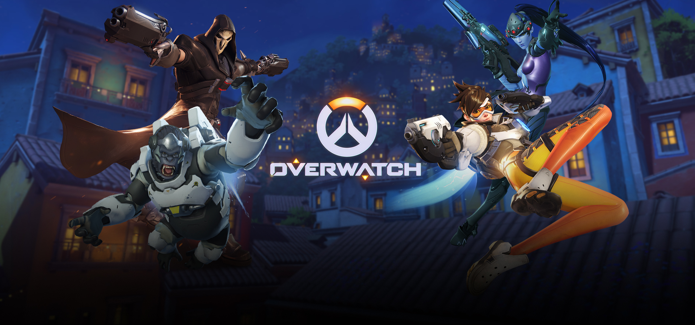

Overwatch is een game gemaakt door blizzard. ik speel zelf ook Overwatch. Ik vind het een heel leuk spel en speel het heel veel.
ik speel heel veel games maar Overwatch blijft wel echt anders. Ik vind het dus ook heel leuk dat er nu Overwatch League is
(eSport eigenlijk gewwon een soort eredivisie maar dan van overwatch in plaats van voetbal). Op deze website ga meer informatie over
overwatchleague. Soms noem ik overwatchleague OWL.

Contact
Naam: Noah van Potten
E-mail: Noah.van.Potten@coderclass.nl
School: Metis montessori lyceum amsterdam oost
Waar kijk je overwatchleague
Twitch,
MLG.com
en de MLG-app (op IOS
en Android), en op
www.overwatchleague.com
Je kunt ook games bekijken in de gloednieuwe Overwatch League-app, die nu beschikbaar is voor
IOS en
Android-apparaten.
Je kan natuurlijk ook naar Los Angeles gaan en het live gaan bekijken, maar thuis op de bank is ook wel nice.
dit is de opstelling in Los Angeles waar al die mensen heen gaan die overwatchleague gaan kijken.
Teams
Atlantic Division
Boston Uprising
Florida Mayhem
Houston Outlaws
London Spitfire
New York Excelsior
Philadelphia Fusion
Pacific Division
Dallas Fuel
Los Angeles Gladiators
Los Angeles Valiant
San Francisco Shock
Seoul Dynasty
Shanghai Dragons
Pacific Division en Atlantic Division
De Pacific Division is de minder goede helft van de league en de Atlantic Division is de betere helft van de league.
Regels
Teams zijn tussen zes en twaalf spelers.
Er zijn geen regels op wie kan worden ingezet waar, vandaar dat het in Londen gevestigde team (londen Spitfire) een team heeft dat alleen bestaat uit Koreaanse spelers.
Spelers jonger dan 18 jaar kunnen contracten tekenen en oefenen, maar kunnen pas in de 18e worden als ze aan het spelen zijn.